The AI Connector enables AI client applications to interact with a running Skyline instance through the Model Context Protocol (MCP). Once configured, you can use natural language to query document data, run reports, import targets, execute commands, and access documentation for reports, command-line, and tutorials directly in your running Skyline instance.
Supported AI client applications include Claude Desktop, Claude Code, Gemini CLI, VS Code (Copilot), and Cursor.
To install the AI Connector from the Skyline Tool Store:
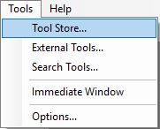
This will open the Install from Tool Store dialog. Select AI Connector from the list and click Install.
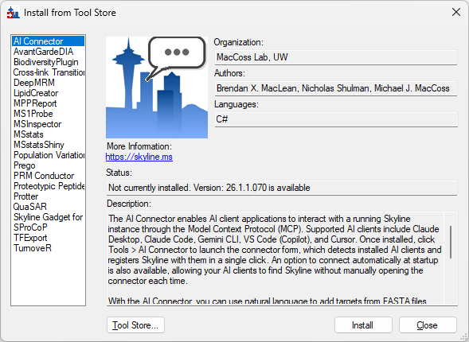
After installation, AI Connector will appear at the top of the Tools menu.
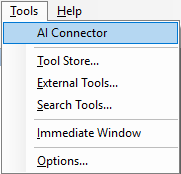
Click Tools > AI Connector to launch the connector. It will automatically connect to the Skyline instance that launched it and display the version and current document.
If no AI clients have been registered yet, the setup panel will expand automatically, showing which AI client applications are available on your computer.
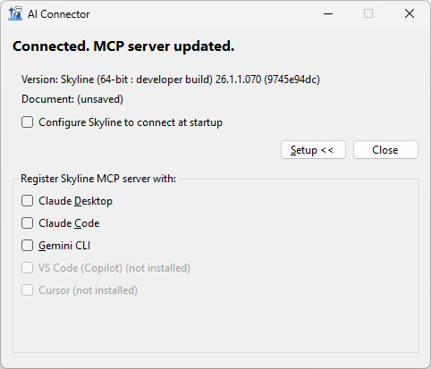
Installed applications appear with enabled checkboxes. Applications that are not installed are shown in gray. Check the box next to any AI client you want to use with Skyline.
In this example, registering with Claude Desktop is shown. If Claude Desktop is running when you check its box, the connector will ask you to close it first, since Claude Desktop must be restarted to pick up configuration changes.
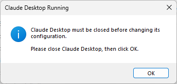
If you did not close Claude Desktop yourself, or even if you do and it continues running in the background, the connector will offer to stop it for you.
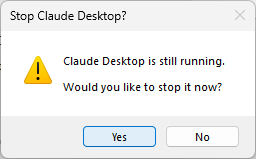
Once registered, the status message will confirm the registration and remind you to start the AI client to activate the connection.
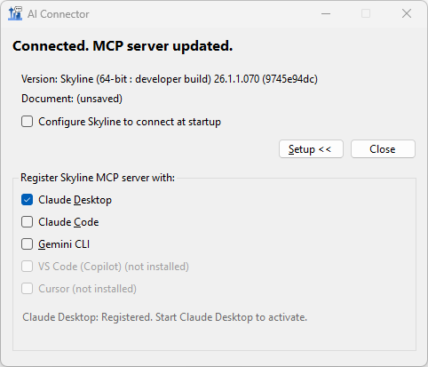
By default, the AI Connector must be launched manually from the Tools menu each time you want to use it. To have Skyline automatically connect to AI clients at startup, check Configure Skyline to connect at startup.
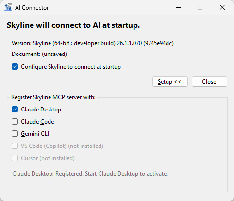
With this option enabled, Skyline will register with the MCP server automatically when it launches, so your AI clients can connect without opening the AI Connector form. The MCP server once registered with your AI client will continue running even as Skyline sessions come and go. It will tell your AI client if it cannot find a session, and it can allow your AI client to work with multiple sessions at once.
To verify the connection in Claude Desktop, open Settings from the menu in the lower-left corner of the Claude Desktop window.
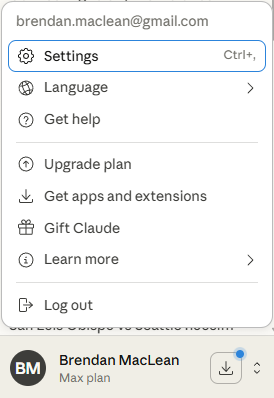
Navigate to Developer at the bottom of the settings panel. You should see skyline listed as a local MCP server with status running.
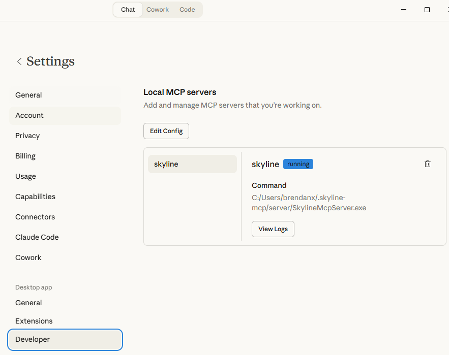
Start a new chat in your AI client (here Claude Desktop). You can ask the AI to connect to your Skyline instance and work with your data. For example, you might ask it to open a document:
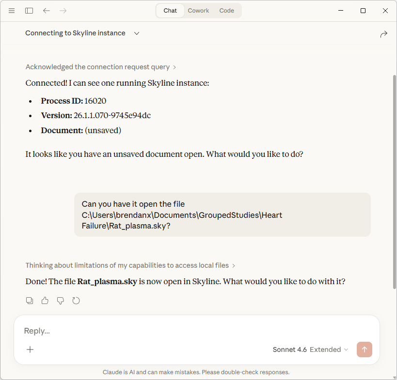
The AI will use the MCP tools to interact with Skyline, opening the requested file and reporting the result.
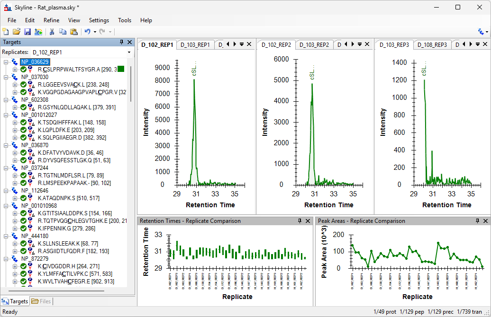
With the AI Connector, you can ask your AI client to: